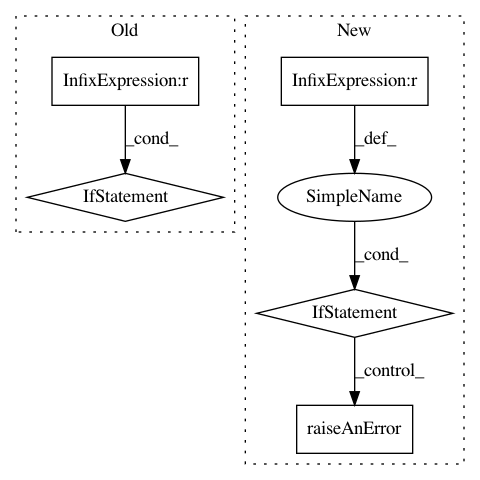

b61879b8f78d7709be5eb12d8fa44832f0e9c362,framework/Optimizers/Optimizer.py,Optimizer,initialize,#Optimizer#Any#Any#,393
Before Change
self.mlBatchInfo[batch] = {}
// specializing the self.localInitialize()
if solutionExport != None:
self.localInitialize(solutionExport=solutionExport)
else:
self.localInitialize()
def localInitialize(self,solutionExport=None):
Use this function to add initialization features to the derived class
it is call at the beginning of each step
After Change
for entry in self.assemblerDict.get("Preconditioner",[]):
cls,typ,name,model = entry
if cls != "Models" or typ != "ExternalModel":
self.raiseAnError(IOError,"Currently only "ExternalModel" models can be used as preconditioners! Got "{}.{}" for "{}".".format(cls,typ,name))
self.preconditioners[name] = model
self.mdlEvalHist = self.assemblerDict["TargetEvaluation"][0][3]
self.objSearchingROM = SupervisedLearning.returnInstance("SciKitLearn", self, **{"SKLtype":"neighbors|KNeighborsRegressor", "Features":",".join(list(self.fullOptVars)), "Target":self.objVar, "n_neighbors":1,"weights":"distance"})
In pattern: SUPERPATTERN
Frequency: 3
Non-data size: 5
Instances
Project Name: idaholab/raven
Commit Name: b61879b8f78d7709be5eb12d8fa44832f0e9c362
Time: 2017-07-03
Author: paul.talbot@inl.gov
File Name: framework/Optimizers/Optimizer.py
Class Name: Optimizer
Method Name: initialize
Project Name: idaholab/raven
Commit Name: 9a0e0b4a450fe0f2f7118182adab6a47dd241964
Time: 2019-01-31
Author: paul.talbot@inl.gov
File Name: framework/Optimizers/SPSA.py
Class Name: SPSA
Method Name: localInputAndChecks
Project Name: idaholab/raven
Commit Name: 79c1d265126b3e1551e60d503817de830dac241f
Time: 2019-11-11
Author: paul.talbot@inl.gov
File Name: framework/Samplers/Stratified.py
Class Name: Stratified
Method Name: localInputAndChecks